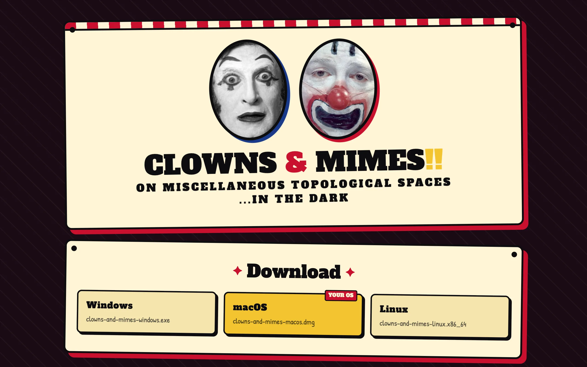
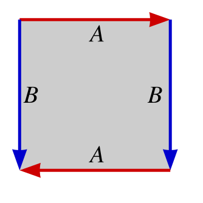

The full title is Clowns and Mimes, on Miscellaneous Topological Spaces... IN THE DARK. It's team tag for up to 16 players, humans and bots. Everyone is a mime or a clown. Turns alternate between the teams, and whoever holds the turn freezes opponents by running into them or hitting them with a freeze shot. Frozen players stay frozen until a teammate touches them, and a team wins when every opponent is frozen. The arena is a labyrinth, the labyrinth is barely lit, and the surface it's built on comes from a short list of quotient spaces.
The client is a native desktop build in Godot 4 and GDScript, shipped as a Windows exe, a signed and notarized macOS dmg, and a Linux binary. Matchmaking and the match itself run on Cloudflare Workers and Durable Objects in TypeScript, one Durable Object per room. It's still pre-alpha.
Four ground surfaces
The playing field is a flat plane with wrap rules applied after every physics step, which gives the gameplay of a curved surface without rendering one. The plane is an 80 by 80 square with walls. The torus identifies opposite edges so both coordinates wrap modulo 80, and walking off the east edge puts a player on the west edge with no wall in between. The Klein bottle uses the identification \((x, z) \sim (x + W, -z)\) with \(z\) also periodic, and the Möbius strip uses the same orientation-reversing identification in \(x\) but hard-bounds \(z\), since the strip has an edge.

{kind=link}
Applying the Klein bottle's z-flip live at the seam means walls jump and the camera mirrors the instant a player crosses \(x = \pm W/2\). So the game plays on the orientation double cover instead. For the Klein bottle that's a 160 by 80 torus whose right half is the z-mirror of the left half, with the flip baked into the maze geometry rather than the wrap rule, so every seam crossing is a plain modular translation and the walls stay continuous. The Möbius strip gets a cylinder 160 around and 40 tall, with the strip's single boundary loop becoming the cylinder's top and bottom walls. The two surfaces differ only in whether \(z\) wraps.
Distance, the tag check, and bot steering all run on the cover. Two players standing on the same point of the Klein bottle but on opposite sheets are 80 units apart as far as the server is concerned, and they can't tag each other. The minimap folds the cover back down, draws a player on the mirrored sheet as a dimmed dot at the z-flipped position, and shows a fold crossing as the dot hopping the map edge with its facing mirrored. I went with it because the cover is what a player walks around on, so a tag across a seam behaves like a tag anywhere else, and the topology shows up in the maze layout and the minimap rather than in the rules.
One maze, two runtimes
The labyrinth is a spanning tree carved over a 10 by 10 grid of cells by seeded iterative depth-first search, then a braiding pass knocks a wall out of every dead end so the maze has loops. The neighbor function carries the topology. Torus cells wrap across both seams, crossing the Klein bottle's x-seam flips the row index, and on the plane out of bounds is solid. Wall segments that land on a wrap seam are dropped, because the identification folds both edges onto the same line and the wall would double up.
The generator exists twice, in GDScript for the client and TypeScript for the server, and the two agree bit for bit: the same 32-bit linear congruential generator with the Numerical Recipes constants, the same fixed neighbor order. Both sides derive the wall list from the room seed alone, so the client bakes its meshes and the server runs collision and line of sight on identical geometry without ever sending mesh data. For the Klein bottle the generator carves the fundamental 10 by 10 maze with the flip-row wrap, then unfolds it into the 20 by 10 cover, mirroring each cell's opening mask and swapping its north and south bits. Carve the cover directly with plain modular wraps and the openings at the middle seam land on mismatched rows, and the two halves can come out as unreachable islands.
In the dark
Ambient light is almost nothing and volumetric fog shortens sight lines further. The lighting that's left does gameplay work. LED strips at the base of every wall glow in the active turn's team tint, warm for clowns and cool for mimes, so whose turn it is reads from anywhere in the maze. Bot vision is gated by a 22-unit radius and a wall line-of-sight test, and a chasing bot that loses its target routes to the last seen position for three seconds before giving up.
The server holds the whistle
Every freeze is decided by the Durable Object. A tag attempt only lands if it's the attacker's team's turn, the attacker is unfrozen, and the victim is unfrozen and wasn't saved within the last 1.5 seconds. The distance on the cover has to be under the contact radius, no wall may cross the line between the two players, and the two have to overlap vertically, so a well-timed jump puts a player out of reach.
The room ticks at 60 Hz from a setInterval inside the Durable Object and broadcasts a delta every tick. Movement is client-predicted. The client runs the same movement step the server does, and on each authoritative delta it replays its unacknowledged inputs from that base and snaps only if the replayed position differs from its prediction by more than 5 cm. Cloudflare can't hold a precise 60 Hz. In practice the interval fires 45 to 54 times a second with multi-second pauses on I/O turns, and a one-in-one-out input drain let the queue overflow and silently drop inputs the client had already predicted, so the acknowledged sequence number jumped and the client's base snapped backward. Now each tick drains the backlog oldest first, capped at six inputs, which keeps the acknowledged sequence in step with what the client sent and also stops a client from banking inputs for a burst.
Everything the two runtimes share is checked with fixtures: TypeScript scripts write JSON snapshots of the simulation and GDScript tests replay them and assert the same numbers. Remote players render at the wrap-equivalent position nearest the local camera, so an opponent crossing a seam appears at the continuation the local player can see rather than teleporting a world-width away.